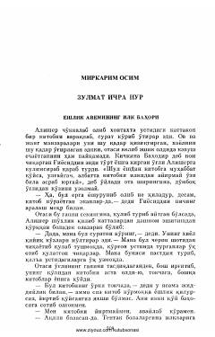

ZIAlisher Navoiyning bolalik yillari va ijodga ilk qadamlari haqidagi tarixiy qissa.
Ushbu tarixiy qissada buyuk mutafakkir va shoir Alisher Navoiyning bolalik yillari, ilmga bo'lgan ilk mehr-muhabbati va oilaviy muhiti tasvirlangan. Asar yosh Alisherning hayotidagi qiziqarli voqealar va uning adabiyotga intilishini ochib beradi.